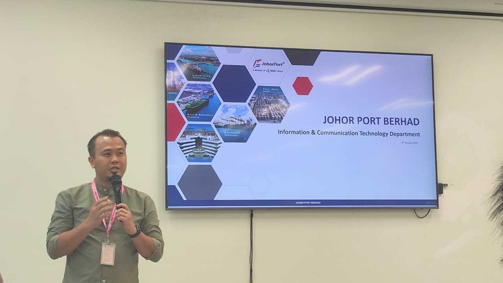

Industrial Visit 2
Information & Communication Technology Department by JohorPort Berhad
Reflection on Industrial Visit 2 at Johor Port:
On the 8th December 2025, just before our last week for semester 1 25/26, our faculty managed to take us on the last industrial visit, organised at Johor Port Berhad, Pasir Gudang. There was a speech about Information and Communication by the ICT department personnel 4in Johor Port Berhad.
Firstly, our main purpose in this visit is to understand how their ICT Department enables this digital transformation. A lot has been learned regarding their transformation processes, such as how low-code platforms help them in rapid application development in order to be effective in comparison to their former method of code program development in code itself. The code itself consumes a lot of energy and time. Their combined system, such as JBPI, ERP Ramco, and PAMS, helps in streamlining operations in data flowing through the entire port. This has developed in them a smoother system in their operations. But the part that convinced me to be part of this organisation was how committed they are to building a cybersecurity system for protecting their data from hackers. This is found in their 24/7 security Operation Centre monitoring.
Overall, this was a very successful and solid closure visit for our Technology & Information System course. Johor Port combines modern technology and adapt the growing technology to always stay efficient and reliable.
We also did a Newsletter for this Industrial Visit. Click Here for the Newsletter.
Industrial Visit 2
Date : 8th January 2026
Day : Thursday
Talk Title: Information & Communication Technology Department by JohorPort Berhad